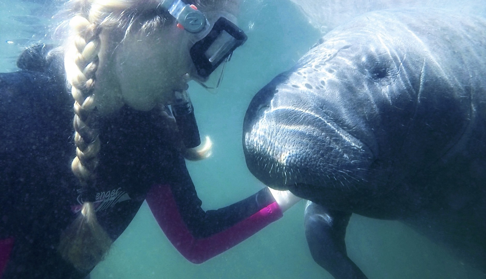

How to Do Good for the Planet (And Yourself!)
Paige Konger wears many hats as she helps her family run the Tarpon Springs Aquarium. She is the head of animal care and husbandry, education, community outreach, and events, and the social media coordinator. Paige also assists in the general management and training of staff and volunteers. She graduated from Oklahoma City University with a Bachelor of Fine Arts in Acting. Using her artistic background, Paige teaches preservation to students through her YouTube, social media platform, and small business, Paige’s Planet. Paige is a board member of Blue Green Connections, a nonprofit responsible for the nomination and application to successfully create the Florida Gulf Coast HOPE spot, a marine protected area.
Here is what Paige had to say when we asked her how you can do good for the planet (and yourself!):
What are three ways you can help the planet?
One, never stop learning! One of the best ways to help the planet is to understand it. I believe that education leads to passion, which leads to action. There are endless ways to learn about nature. There are articles, books, documentaries, social media sources, and podcasts dedicated to the topic. My favorite way to learn is to get outside, get to know our nonhuman neighbors, and to be immersed in the wild.
Two, remember the little things do add up! Things that seem small, like using more energy-friendly light bulbs, recycling, carpooling, and refusing any optional single-use plastics can make a huge impact. If we all do a small part, the effect can be beyond what we anticipated. Go to that beach cleanup and bring your own water bottle! Your choices are capable of changing the world.
Three, be an environmental advocate and informed voter. Once I was bitten by the “save the planet” bug, I found it difficult to stop myself from shouting it out to the world! I have learned that respectful communication and advocacy to those in your sphere of influence, no matter how small that feels, can create a ripple effect. Using your voice and your individual talents to help protect the planet may make an incredible impact.